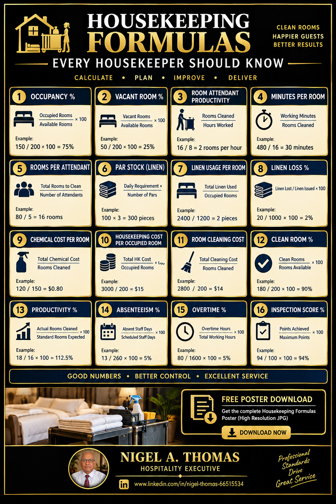

Rooms per attendant, minutes per room, linen par stock, laundry cost per occupied room and every other housekeeping formula a hotel manager, executive housekeeper or rooms division leader needs — with worked examples you can use today.
Housekeeping is the largest single labour cost in most hotels — often 30–40% of total payroll — and it is also the department with the least formal analytical training. Most executive housekeepers learn the numbers on the job, by trial and error, without ever being taught the formulas that underlie them. That gap is why so many hotels run housekeeping on instinct, and why the same department can swing from overstaffed to understaffed inside a single season.
The formulas below are the ones that matter. They are simple, they're used across every major hotel brand, and once you know them you can defend any staffing, productivity or cost decision you make in front of an owner, a GM or a regional director. Every formula is paired with a worked example using realistic numbers from a mid-size full-service property.
Rooms Per Attendant measures how many rooms one room attendant cleans in a standard shift. It is the primary productivity benchmark for the department, and every roster, every labour cost calculation and every productivity conversation starts here. The right number depends on your hotel's tier and room type: a limited-service hotel might run 16–18 rooms per shift, a full-service property 12–14, and a luxury or resort property 8–10.
What moves the number is not effort, but service standard. Turndown service, nightly amenity refresh, pillow menus, robes and extra towels, deep-clean cycles and guest-requested extras all consume minutes. Track RPA by day-of-week and by floor, not as a single monthly average, or you'll miss which floors and which shifts are quietly dragging the whole department down.
RPA = Total Rooms Cleaned ÷ Total Attendant Shifts
Rooms Cleaned = 320
Attendant Shifts = 24
RPA = 13.3 rooms per shift
Minutes Per Room is the mirror image of RPA — instead of rooms per shift, it tells you how many minutes it actually takes to clean one room. That matters because it lets you build rosters from first principles rather than copying last year's numbers. It also exposes where the real time is going: a checkout clean is not the same as a stayover clean, and a suite is not the same as a standard king.
Benchmarks vary by room state and type. A departure clean in a standard room often runs 25–35 minutes; a stayover clean 15–20 minutes; a suite 45–60+ minutes. If you build rosters using one blended MPR, you'll always be wrong on the days that matter most — the heavy checkouts and the suite turns.
MPR = Total Attendant Minutes ÷ Rooms Cleaned
Attendant Minutes = 4,200 (24 shifts × 175 min productive)
Rooms Cleaned = 320
MPR = 13.1 minutes per room
Linen par stock is the total quantity of each linen item (sheets, pillowcases, towels, bath mats, etc.) you must hold to keep operations running without interruption. "Par" means the level at which you can have one set on the bed, one set in the laundry and one set on the shelf simultaneously — a three-par system. Four-par is common in resorts and high-occupancy properties where laundry cycles are slower.
Getting par wrong is expensive both ways. Too low, and you'll be short-sheeted on a busy weekend, forced to send linen to an outside laundry at premium cost, or worse, run out entirely. Too high, and you tie up working capital in inventory that wears out in the cupboard. Track par item-by-item, not in aggregate, and review it every time occupancy patterns or laundry cycle times change.
Par Stock = Rooms × Linen per Room × Par Level
(Typical par level: 3× for city hotels, 4× for resorts)
Rooms = 150
Sheets per Room = 1
Par Level = 3
Par Stock = 450 sheets
Linen wears out — through normal laundering, stains, tears and loss — and it must be replaced on a predictable schedule. The linen replacement rate is the percentage of your par stock you replace each month or year, and it's the number that quietly determines how big your housekeeping capex or expense line will be. Standard industry guidance sits around 2–3% per month for towels and 1–2% per month for bed linen, but the actual number depends heavily on laundry chemistry, water hardness and how much linen goes to outsourced cleaners.
Track replacement by item (bath towels, hand towels, sheets, pillowcases) so you can see which category is wearing out faster. If towels are being replaced at 5% a month and sheets at 1%, the problem isn't the laundry overall — it's likely detergent strength, drying temperature or how towels are being handled during cleaning.
Replacement Rate (%) = (Items Replaced ÷ Par Stock) × 100
Towels Replaced per Month = 90
Par Stock = 3,000
Replacement Rate = 3% per month
Laundry Cost Per Occupied Room captures all the cost of processing linen, towels, uniforms and guest laundry for one occupied room. It's a per-room metric, which makes it comparable across hotels of different sizes and lets you track it against ADR and RevPAR. If ADR is rising but CPOR is rising faster, the department is eating into your pricing gains.
In-house laundries usually measure this through water, chemicals, energy and labour — plus the amortised cost of the equipment itself. Outsourced laundries measure it as the invoice divided by occupied rooms. Whichever model you run, the calculation is the same: all laundry cost for the period, divided by occupied rooms in the same period. Watch it by month, and split it between guest laundry and house linen, because the two behave very differently.
Laundry CPOR = Total Laundry Cost ÷ Occupied Rooms
Laundry Cost (month) = $9,600
Occupied Rooms (month) = 3,200
Laundry CPOR = $3.00 per occupied room
Cleaning Cost Per Occupied Room is the total cost of cleaning — attendant labour, supervisor labour, cleaning chemicals, guest supplies and equipment depreciation — divided by occupied rooms. It is the single most useful cost benchmark in the department, because it lets you compare a hotel in Delhi to a hotel in Dubai in a way that absolute currency can't.
Split the number into labour and consumables when you report it. Labour is usually 70–80% of the total, and consumables (amenities, cleaning chemicals, guest supplies) are the balance. If your cleaning CPOR is rising but labour is flat, the problem is in consumables — theft, over-use, or a guest-amenity upgrade that hasn't been matched with a price increase.
Cleaning CPOR = Total Cleaning Cost ÷ Occupied Rooms
Cleaning Cost (month) = $22,400
Occupied Rooms (month) = 3,200
Cleaning CPOR = $7.00 per occupied room
Public area cleaning is the least-understood part of housekeeping and the one most often over-resourced because there's no clear productivity benchmark. The fix is to measure square metres per hour, by area type: lobby, corridors, restrooms, restaurants, meeting rooms, spa, pool deck and so on. Each area has a normal cleaning rate — for example, restrooms take far longer per square metre than corridors.
Once you have per-area productivity rates, you can build public area rosters the same way you build room attendant rosters. A common benchmark for a mid-tier hotel lobby is around 200–300 square metres per cleaner per hour; restrooms run 40–80 square metres per hour; guest corridors 250–350 square metres per hour. These numbers vary widely, so track your own for a month before you use them to defend a roster change.
Square Metres per Hour = Total Area Cleaned ÷ Total Cleaning Hours
Area Cleaned = 2,400 sqm
Cleaning Hours = 10
Rate = 240 sqm per hour
Bottom line: Rooms per attendant, minutes per room, linen par stock, linen replacement rate, laundry cost per occupied room, cleaning cost per occupied room and public area productivity — these seven formulas cover 90% of the analytical work in a modern hotel housekeeping department. Learn them, report them weekly, and you'll be able to defend every staffing and cost decision you make.
The temptation with any list of formulas is to report all seven every week and call it a department dashboard. That doesn't work. The right approach is to treat the seven as three layers. Productivity metrics — rooms per attendant, minutes per room, public area square metres per hour — tell you whether your rosters are right. Inventory metrics — linen par stock and replacement rate — tell you whether your linen cycle is healthy. Cost metrics — laundry CPOR and cleaning CPOR — tell you whether the department is meeting its financial targets.
Track productivity daily, inventory monthly, and costs weekly. Share productivity with supervisors and floor leaders, because they're the ones who can act on it. Share inventory with the laundry manager and purchasing. Share costs with the GM, Director of Rooms and Finance — because that's who owns the P&L consequences.
Hotel labour costs have risen faster than room rates in most markets over the last five years. Housekeeping is on the front line of that squeeze — it's the largest departmental labour pool, it's the department most affected by minimum wage increases and it's the one guests notice first when it's under-resourced. The operators who manage this well are the ones who read their formulas weekly rather than monthly and who can explain movements in plain English to ownership.
The formulas themselves haven't changed in decades. What has changed is how quickly a badly-run housekeeping department shows up in the numbers. Weekly reporting, not monthly, is now the norm in well-run hotels. Start with one property, one week, seven formulas, and build the discipline from there.
Using one blended MPR for every room state. A departure clean and a stayover clean are not the same task, and neither is a suite. Measure them separately or your rosters will always be wrong.
Confusing RPA with attendance. Rooms per attendant measures productivity, not presence. An attendant who shows up but is reassigned to public areas or deep-clean tasks still counts against attendance but not against room productivity. Keep the two separate.
Setting par stock from last year's numbers. Par should be driven by current occupancy, laundry cycle time and lead time on linen orders — not copied forward. Review it every six months, or after any change in laundry provider.
Ignoring the split between guest laundry and house linen. They behave completely differently and should always be reported separately. Guest laundry is variable; house linen is largely fixed by par stock and cycle time.
Learn these formulas, report them weekly, and defend them in every operations meeting. The department that can speak in numbers wins the argument for the resources it needs — and it runs cheaper while it does.

Housekeeping formulas at a glance — Rooms Per Attendant, Minutes Per Room, Linen Par Stock, Replacement Rate, Laundry Cost Per Occupied Room, Cleaning Cost Per Occupied Room and Public Area Productivity. Right-click to save or share.